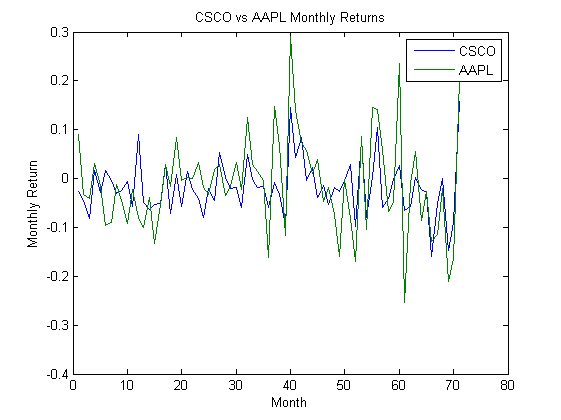
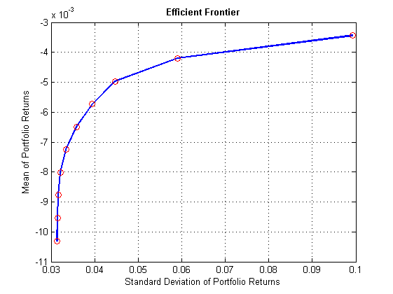
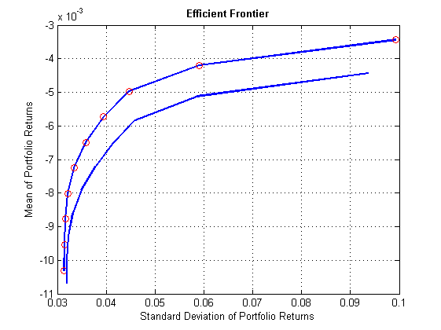
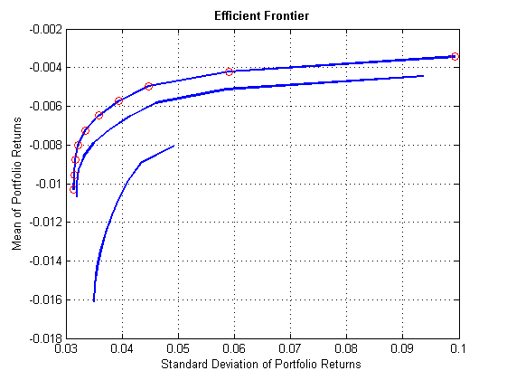

Contents
- Command line Execution
- I am using datafeed tool box in order to fetch the data of multiple securities so below i have created a for loop in order to nest the whole thing
- It is possible to convert a series of prices into corresponding returns by using the price2ret function. which is executed in this section.
- Here we have plotted few of the stock returns by using plot function
- So here we are formulating a typical asset allocation problem
- Here we can plot the effecient frontier this will accept that we calculated before this section.and the set default constraints will sum all the weights to 1
- Suppose we want particular stocks such as 3M(1), CAT(12) and GE(18) whose sum should equal to 0.1
- Inequality Constraints
- Adding bounds on Aseet
- Adding budget Constraints (Defining long short strategy )
- there are transactions costs in reality as well but that is beyond the scope of this prototype.
Command line Execution
%Markowitz Portfolio Optimization, evaluation of the model,The efficient frontier concept was introduced by Harry Markowitz in 1952 and is a cornerstone of modern portfolio theory. %%This script is only for the purpose of demonstrating the portfolio %%optimization, it will help my examiner to see and understand the %%research that i am taking over for my MSC finance.
I am using datafeed tool box in order to fetch the data of multiple securities so below i have created a for loop in order to nest the whole thing
%so when i am doing my final research i can use the same bit of code and %add securities names(tickers)and build on that. We connect with yahoo %that is the only source we have access to. c = yahoo; ticker = {'MMM', 'AA', 'AAPL','DIS','GS','IBM','INTC','JPM','T', 'BAC', 'BA', 'CAT', 'CVX', 'CSCO', 'KO', 'DD' 'XOM', 'GE', 'HPQ', 'HD'}; %for i = 1:30,We are only interested in 20 components of DJIA, we automate %the process of fetching data of multiple securities by initiating a for %loop so that we don't need excel in here for data sorting. for i = 1 : 20 Price.(ticker{i}) = fetch(c,ticker(i),'Adj Close','01/01/2009','12/31/2014','m'); temp = Price.(ticker{i}); ClosePrice(:,i) = temp(:,2); end
It is possible to convert a series of prices into corresponding returns by using the price2ret function. which is executed in this section.
Returns = price2ret(ClosePrice);
Here we have plotted few of the stock returns by using plot function
plot(Returns(:,1:2)); ylabel('Monthly Return'); xlabel('Month'); legend('CSCO','AAPL'); title('CSCO vs AAPL Monthly Returns')
So here we are formulating a typical asset allocation problem
By the documentation of matlab it suggests first to create a portfolio object and once this command is passed it will create a portfolio with an inbuilt properties.
p = (Portfolio('Name', 'DJIA 30')); p =Portfolio('assetlist', {'MMM', 'AA', 'AAPL','DIS','GS','IBM','INTC','JPM','T', 'BAC', 'BA', 'CAT', 'CVX', 'CSCO', 'KO', 'DD' 'XOM', 'GE', 'HPQ', 'HD' }); disp(p.AssetList);p = Portfolio; [assetmean, assetcovar] = getAssetMoments(p); disp(p);
Columns 1 through 9
'MMM' 'AA' 'AAPL' 'DIS' 'GS' 'IBM' 'INTC' 'JPM' 'T'
Columns 10 through 18
'BAC' 'BA' 'CAT' 'CVX' 'CSCO' 'KO' 'DD' 'XOM' 'GE'
Columns 19 through 20
'HPQ' 'HD'
Portfolio with properties:
BuyCost: []
SellCost: []
RiskFreeRate: []
AssetMean: []
AssetCovar: []
Turnover: []
BuyTurnover: []
SellTurnover: []
Name: []
NumAssets: []
AssetList: []
InitPort: []
AInequality: []
bInequality: []
AEquality: []
bEquality: []
LowerBound: []
UpperBound: []
LowerBudget: []
UpperBudget: []
GroupMatrix: []
LowerGroup: []
UpperGroup: []
GroupA: []
GroupB: []
LowerRatio: []
UpperRatio: []
Here we can plot the effecient frontier this will accept that we calculated before this section.and the set default constraints will sum all the weights to 1
p = p.estimateAssetMoments(Returns); p = p.setDefaultConstraints; [prisk, preturns] = p.plotFrontier(10); [pwvt] = p.estimateFrontier(10); hold on plot(prisk, preturns, 'ored'); %%Equality constraints this is where matlab becomes even better
Suppose we want particular stocks such as 3M(1), CAT(12) and GE(18) whose sum should equal to 0.1
%in the portfolio. This is considered as linear equality constraint and can %be executed by the following two methods. A = zeros(size(ticker)); A([1 12 18]) = 1; b = .1; p = p.setEquality(A, b); p = Portfolio(p,'AEquality', A, 'bEquality', b); hold on p.plotFrontier;
Inequality Constraints
%Say we want to limit the bank stocks or put an cap or the maximum of the %5% of the banking stocks in our portfolio ao we have Bank of America and %JPmorgan. C = zeros(size(ticker)); C([8,10,]) = 1; d = 0.05; %Method 1 p= p.setInequality(C,d); % Method 2 hold on p.plotFrontier;
Adding bounds on Aseet
% define long limit to 10% and short limit to 5%. lb = -0.05; ub = 0.10; %Methods are p=p.setBounds(lb,ub); %Method 2 p = Portfolio(p,'LowerBound',lb,'Upperbound',ub); hold on p.plotFrontier;
Adding budget Constraints (Defining long short strategy )
% This long short strategy would allow us to take a long position in % stocks that would ioncrease in the value and at the same time we will % take a short position in stocks that will decrease in the value. % This strategy would allow us to hold atleast 95% and atmost 105% in the risky assets % the 105% allocation would mean that we can borrow 5% at risk frree rate % to buy 5% more risky assets. % Method 1 p=p.setBudget(0.95,1.05); %Method 2 p= Portfolio (p,'LowerBudget',0.95,'UpperBudget',1.05); hold on p.plotFrontier; format_plots();
Undefined function or variable 'format_plots'. Error in Optimisationcode (line 126) format_plots();